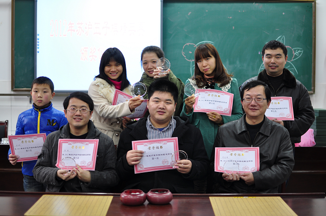

2012年苏沪五子棋精英赛最终结果
#1 2012年苏沪五子棋精英赛最终结果 作者：黄药师 发表时间：2012-12-16 22:44:55
名次 姓名 积分 对手分 中间分 赢棋数
1 朱建锋, 4.5 22.0 15.0 4
2 顾炜, 4.5 20.5 13.5 4
葛凌峰, 4.5 20.5 13.5 4
4 简咏璇, 4 23.5 16.0 4
5 成艳珍, 4 18.5 12.0 4
6 吴志琴, 3.5 18.5 13.5 3
7 胡劼, 3.5 16.5 10.5 2
8 唐世祺, 3 20.0 13.5 3
9 何耀文, 3 18.5 11.5 2
10 王烨林, 3 17.0 12.0 3
11 周楠, 3 16.5 11.5 3
12 李洁, 2.5 20.0 15.0 2
13 寇易凡, 2.5 18.5 12.5 2
14 胡嘉瑶, 2.5 17.0 11.5 2
15 陈璐宁, 2.5 15.0 10.0 2
16 陈幸, 2 13.5 9.0 1
17 李子珩, 1 13.5 10.0 1
18 徐颖, 0.5 14.5 10.0 0
顾炜和葛凌峰积分小分都相同，通过5分钟+3秒的快棋加赛，最终葛凌峰获胜夺得第二名，顾炜第三名

ps：我觉得小朱好幸福
#2 Re:2012年苏沪五子棋精英赛最终结果 作者：小小亦默 发表时间：2012-12-16 23:27:53
目测葛凌峰老师有一局下得很棒#3 Re:2012年苏沪五子棋精英赛最终结果 作者：水月 发表时间：2012-12-19 0:02:24
直播由于一些客观原因，在第二天就没有办法完成了，所以第二天的直播取消了。对不住大伙。#4 Re:2012年苏沪五子棋精英赛最终结果 作者：天逸乄西西 发表时间：2012-12-19 0:29:55
哪位可以把其他的相片上传哈？［ 冰雪笑醉 于 2012-12-19 14:42:16 时花20金币送鲜花一朵］
#5 Re:2012年苏沪五子棋精英赛最终结果 作者：冰雪笑醉 发表时间：2012-12-19 14:41:02
 成艳珍，简咏璇,吴志琴
成艳珍，简咏璇,吴志琴
 和楼主观点一样，朱大师好幸福。。
和楼主观点一样，朱大师好幸福。。
#6 Re:2012年苏沪五子棋精英赛最终结果 作者：天逸乄西西 发表时间：2012-12-19 15:38:23
 谢谢笑醉的花花
谢谢笑醉的花花